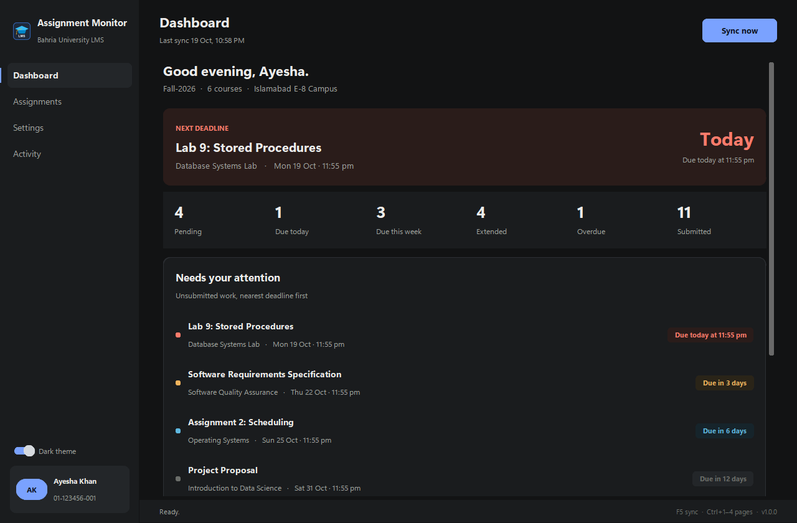
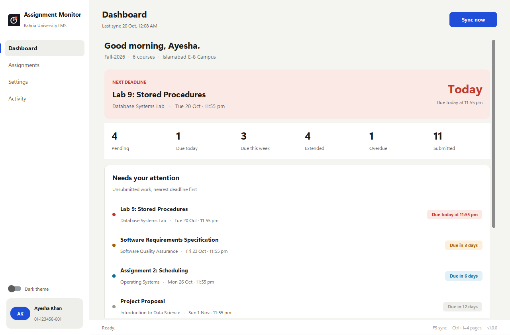

The next deadline, with a countdown
Whatever is due soonest and still unsubmitted sits at the top, coloured by urgency. Today is red, this week is amber, later is quiet.
Assignment Monitor signs in to the portal for you, reads every course, catches the extended deadlines the LMS hides, and reminds you out loud on the day something is due. Wherever your campus is, it keeps watch.


Whatever is due soonest and still unsubmitted sits at the top, coloured by urgency. Today is red, this week is amber, later is quiet.
Each counter is a filter. Click it and the Assignments page opens on exactly that slice.
Unsubmitted work sorted by deadline, each with its course and exact due time. No digging through six course pages.
Switch the theme any time. Close the window and it keeps running in the tray; the background checks run even when it doesn't.
Scroll to continue
It does on your PC exactly what you would do by hand in a browser, on a schedule, and tells you only what matters.
When a teacher moves a date, the LMS squashes old and new into one string. The app reads both and flags the change.
On the day something is due and still unsubmitted, a spoken reminder and a Windows notification every hour until it's done. Pick the voice, volume and speed.
Three Windows tasks under your own account. No admin rights, no service, and they work with the window closed.
Close the window and it keeps running quietly. Right-click the icon to open, sync now, or quit. Optionally starts with Windows.
Checks the project's GitHub releases on start (switchable). One click downloads the new installer, closes, reinstalls and reopens. Your sign-in and data are kept.
MIT licensed. Every release is built by GitHub Actions from the public repository, with tests and a dependency audit on every commit.
Run the setup. It installs for your user account only, no administrator password, and adds a Start Menu and Desktop icon.
Enrollment number, CMS password, campus. The app verifies the sign-in live and reads every course of the semester.
Leave "Check automatically" ticked. From then on it checks at 7 PM, after you sign in to Windows, and hourly on due days.
Nothing blinks, nothing nags. What you need is a glance away; the rest stays out of the way.
There is no server behind this app and no account to create.
The portal password is protected with Windows Data Protection for your user account. Another user or another PC cannot read it, and it is never written to the log.
The only connections are to cms.bahria.edu.pk and lms.bahria.edu.pk, plus an optional, switchable check of GitHub for new versions. No analytics, no telemetry.
MIT licensed. Releases are built by GitHub Actions straight from the repository, and you can build the same thing yourself with one command.
Yes. The warning appears because the installer is not yet code-signed; the project is applying for a free open-source certificate. Click "More info", then "Run anyway". If you prefer, build it yourself from the source code with one command; the result is identical.
No. Assignment Monitor is an independent student project. It is not affiliated with, endorsed by, or supported by Bahria University.
It signs in with your own credentials and reads your own assignments page, the same way you would in a browser. It never submits, uploads or changes anything on the portal, and it never sends your data anywhere.
If Chrome is installed it is used in the background. If not, a browser engine is downloaded once automatically. You never see a browser window.
For the 7 PM check, yes, but if it was off a catch-up check runs two minutes after you next sign in to Windows. The hourly reminder only fires while something is due that day.
Windows Settings → Apps → Assignment Monitor → Uninstall. That removes the app and its background tasks. To wipe everything, also delete %LOCALAPPDATA%\Assignment Monitor.
Free, open source, three minutes to set up.